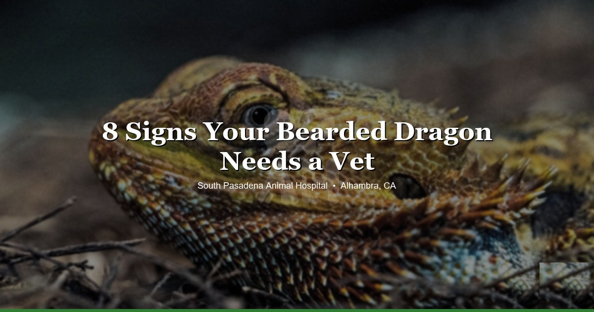

March 31, 2026 · 8 min read
Signs Your Bearded Dragon Needs to See a Vet

Bearded dragons are really good at acting fine when they're not. It's a survival thing — in the wild, looking sick gets you eaten. That instinct carries over into captivity, which means by the time you actually notice something off, your beardie has probably been dealing with it for a while already.
We see this a lot at South Pasadena Animal Hospital. An owner brings in their dragon thinking it just started acting weird yesterday, and it turns out the problem's been building for weeks. So here are the signs we tell people to watch for — the ones that actually matter.
1. Not Eating (But Not for the Usual Reasons)
This is probably the most common call we get about bearded dragons. "My beardie stopped eating — should I be worried?"
Honestly, sometimes no. Brumation, shedding, a new enclosure — these can all cause a temporary dip in appetite that resolves on its own. We usually tell people to give it a few days to a week before panicking.
But here's when it becomes a real concern:
- They haven't eaten in two-plus weeks and it's not brumation season
- You can start to see the hip bones or the tail base is thinning out
- The appetite loss comes with other symptoms — lethargy, weird stool, anything else on this list
A lot of owners try switching up the food first — different bugs, different greens. That's not a bad instinct, but if it's parasites, mouth rot, impaction, or early metabolic bone disease, a diet change isn't going to fix it. Better to come in and rule out the serious stuff.
2. Sleeping All Day or Just... Flat
A healthy beardie should be up and doing things during the day. Basking, watching you from across the room, maybe glass surfing if they're feeling restless. If yours is just lying flat, not interested in basking, not reacting when you open the enclosure — that's not normal.
Now, before you rush in: check your setup first. We can't tell you how many times the issue turns out to be a burned-out UVB bulb or basking temps that drifted too low. Those bulbs lose output way before they actually stop working — if yours is older than 6 months, replace it. Basking spot should be 100–110°F, cool side around 80–85°F.
If the husbandry checks out and they're still flat after a few days, that's when we want to see them. Could be infection, parasites, organ issues — things you can't fix by adjusting the tank.
3. Black Beard That Won't Quit
Bearded dragons puff out a dark beard for all kinds of reasons — territorial display, stress, temperature regulation. Totally normal in short bursts.
What's not normal is when it stays dark. Like, persistently. Especially if they're also puffed up, not eating, or just seem off. In our experience, a beard that won't go back to normal usually means pain. The dragon can't tell you something hurts, so this is kind of their version of that. We commonly see it alongside respiratory infections or GI problems — things that aren't visible from the outside.
4. Mouth Gaping, Mucus, or Wheezing
Quick distinction here: mouth gaping while sitting under the basking light is fine. That's how they cool off. But if your beardie is open-mouth breathing when they're not basking? That's a problem.
Watch for:
- Bubbles or mucus around the nose or mouth
- Clicking, popping, or wheezing when they breathe
- Stringy saliva or discharge
- Their whole body puffing up with each breath — like they're working hard just to get air
This is almost always a respiratory infection. And here's the thing with reptile respiratory infections — they escalate fast. We generally tell people not to wait this one out. A couple days of antibiotics early on is a lot better than dealing with pneumonia later.
5. Swollen or Closed Eyes
Eye problems in beardies can mean a few different things depending on whether it's one eye or both:
- One eye puffy or shut: could be an abscess, an injury, or retained shed wrapped around the eye area
- Both eyes affected: more likely something systemic — vitamin A deficiency, or a lighting issue
Speaking of lighting — if you're still using a coil-style UVB bulb, that might actually be the cause. Those compact coils can irritate their eyes. We always recommend switching to a linear tube UVB (like ReptiSun 10.0 or Arcadia). It's better coverage anyway.
Either way, don't try to treat eye issues at home with random drops. What works depends entirely on what's causing it, and getting that wrong can make things worse.
6. Weird Poop or No Poop
Not the most glamorous topic, but honestly one of the most useful things to pay attention to. Normal bearded dragon poop has two parts: a brown solid and a white urate (that's basically their version of urine). Once you know what normal looks like, abnormal is pretty obvious.
Bring them in if you see:
- Red or black in the stool — could mean internal bleeding
- Really runny or unusually smelly stool — parasites are the usual suspect
- No poop at all for a week or two even though they're eating — possible impaction
Impaction is something we see a lot, especially with dragons kept on loose substrate like sand or crushed walnut. Food that's too large can cause it too. Sometimes a warm bath and gentle belly rub gets things moving again, but if it's been more than a few days with no results, don't keep trying home remedies. Impaction can get serious.
7. Wobbly Walking or Rubbery Limbs
This one's hard to watch. If your beardie is shaking, can't seem to lift their body properly, or their limbs feel soft and bendy — that's almost certainly metabolic bone disease (MBD). It's one of the most common things we treat in bearded dragons.
MBD happens when they're not getting enough calcium, vitamin D3, or UVB light. The body starts pulling calcium out of the bones to keep things functioning, and over time the bones get soft and deformed. Sometimes the jaw feels spongy. The legs can start to bow.
The good news is that if you catch it early, it's very treatable. The bad news is that once the bones are deformed, that damage is permanent. So this is one where we'd rather see your dragon too early than too late. Prevention-wise: proper UVB tube bulb (replaced every 6 months, seriously), and calcium with D3 dusted on food regularly.
8. Skin Changes or Stuck Shed
Shedding is normal. Beardies do it their whole lives, more often when they're young. Usually the old skin comes off in patches and that's that. But sometimes shed gets stuck — and when it wraps tight around toes, tail tips, or the area around the eyes, it can actually cut off circulation. We've seen dragons lose toes to retained shed that went unaddressed.
Other skin things to watch for:
- Dark patches on the belly: usually a thermal burn. This is why we tell everyone — no heat rocks. Ever. Use overhead heat only.
- Yellow or orange discoloration: could be yellow fungus disease, which is a serious fungal infection that needs treatment right away
- Lumps, bumps, or raised areas: abscesses, parasites, or growths that need to be looked at
When It Can't Wait
Most of the signs above warrant a vet visit within a few days. But some things are genuine emergencies:
- Prolapse — tissue coming out of the vent. Keep it moist with a damp paper towel or cloth and get to a vet now, not tomorrow.
- Egg binding in females — straining, swollen belly, lethargy. This can be fatal without help.
- Trauma — dropped, stepped on, grabbed by the dog. Even if they look okay, internal injuries happen.
- Seizures or paralysis — severe MBD, possible toxin exposure, or neurological problems.
What Actually Happens at a Reptile Vet Visit
A lot of bearded dragon owners have never taken a reptile to the vet before, so here's what the visit usually looks like with us:
- Physical exam: we check weight, body condition, look in the mouth, palpate the belly, check the skin and eyes
- Fecal test: we run this on almost every beardie we see, because parasites are incredibly common — especially in pet store animals
- Bloodwork: not always needed, but if we're worried about organ function or calcium levels, we'll recommend it
- Husbandry review: we're going to ask about your setup. Temps, UVB type, diet, supplements — all of it. A lot of bearded dragon health problems trace back to husbandry, so this part matters
We try to keep things straightforward. You can check our pricing page to see what exams cost before you come in.
Keeping Them Healthy Long-Term
- Annual checkups — twice a year if your dragon is older. Catches problems before they become expensive ones.
- Good UVB lighting — linear tube bulb (Arcadia or ReptiSun 10.0), replaced every 6 months even if it still turns on. This is probably the single most important thing in the enclosure.
- Age-appropriate diet: juveniles need more insects, adults need more greens. A lot of owners keep feeding mostly bugs into adulthood and wonder why their dragon is overweight.
- Calcium with D3 dusted on food every other feeding
- Take advantage of the SoCal sun. Natural sunlight does things for beardies that even the best UVB bulb can't fully replicate. On warm days (above 75°F), supervised outdoor time is genuinely one of the best things you can do for them.
Bottom line — if something seems off with your bearded dragon, don't sit on it. Reptiles are tough, but by the time they look sick, they've usually been sick for a while. Earlier is always better. We see bearded dragons and other reptiles at our Alhambra clinic and we're happy to take a look.